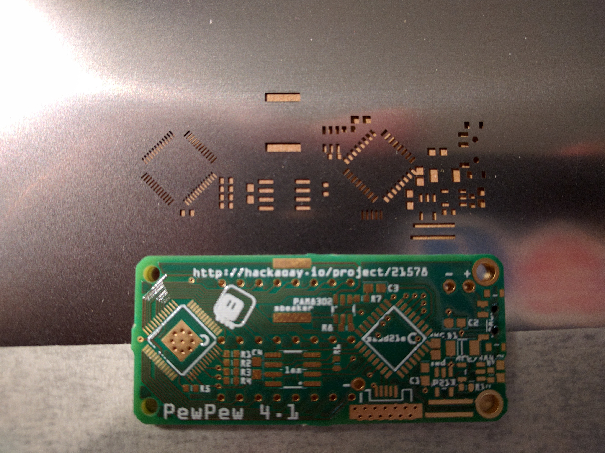

The Aisler Saga, Part 2¶
Published on 2017-12-06 in PewPew FeatherWing.
A few weeks ago I found in my mailbox a strange box from Aisler I was a little bit surprised, as I didn’t order anything from them since the last time, when I tried their service for the first time . The box contained another 3 PCBs of version 4.1, and a steel stencil for one side. A few days later another parcel arrived, with another 3 PCBs and a stencil for the other side. This would have been great, except at the moment I was already two versions further into the design, and the boards just added to the pile of the trash PCBs I will never use. Sigh.
So I wrote @Felix Plitzko an e-mail, explaining that I don’t really have the time right now to try those boards, that they are wrong version anyways, and that they should not send me anything without asking. I never got any answer to that e-mail, but no further packages arrived, so I guess I am good. I also promised to look at those boards and stencils at some point in the future, just to see how the service improved. So let’s look at them.
This is the back of the board, and the corresponding stencil. I have to admit that all the dense thin pads for the ISSI chip are exactly the same, and generally I can’t see any problems with the solder mask or copper. The silkscreen is still a little low-res, but it’s somehow much more readable. There outline of the ISSI chip is a bit broken on the silkscreen, but that might as well be a Fritzing bug — it has a lot.
You can also see that the drunk German who is cutting out those boards with a hatchet got over his hangover from Octoberfest, but is still not very precise. What’s worse, each of the PCB has those leftover tabs different — which I will get back to in a moment.
As for the stencil, it looks correct at first, but if you look closely, there are three strange things. First, there are no pads for the USB socket. I suppose they got confused by all the vias I placed there for mechanical support, and skipped them. Second, there is no hole for the ISSI chip’s heatsink. To be frank, I don’t know if there is supposed to be one or not — I’m not familiar with stencil practice. Third strange thing is that there are holes in the stencil for the power switch’s mounting holes. Am I supposed to put solder paste into them?
Let’s look at the other stencil:
This one is much simpler and less mysterious. There is only one problem here, which is the missing pad for the “up” button. Interestingly, no holes for the power switch this time, even though, being holes, they are present on both sides of the PCB. I guess it’s enough to fill them with solder paste from one side.
Fine, so there are some mistakes in there. That happens, especially since I had no idea they are going to be making stencils out of my design, and so I didn’t pay attention to take care of any details relevant to that. You would still think that they would put more care into checking their “demo” work.
So let’s try and actually use a stencil. I never tried one before, so I was curious. I choose the top one, with the buttons, because that part of my design didn’t change much and I wouldn’t be wasting parts soldering an old version of the project. Also, buttons are easier to recover.
So first I had to somehow align the PCB with the stencil. On the movies I saw that you usually have your stencil taped by one side to something, then tape some stuff around your PCB to fix it in place in an aligned position. I couldn’t get that to work, it was just too difficult to move the PCB under the template to align it. It would have been much easier if the template also had the mounting holes or something — but I guess then the solder paste would get into them.
Eventually I untaped the stencil, aligned the PCB by holding both in my hands, and taped some stuff around the PCB to the template to fix the position. Success.
Now try a second PCB, and… it doesn’t fit. Because those hacked tabs are uneven, and give different spacing. So I would need to manually align every single PCB I wanted to use with this stencil, or find a different way of securing the PCBs in place (tape the stuff around it so as to avoid the tabs).
All in all, in summary:
the boards are good quality, and even improved,
the board outline still has leftovers from the tabs they added for panelization, but you can’t just remove them with sharp knife as you can with every other PCB fab, because they don’t have the holes,
those tabs are uneven and make it difficult to align the boards with the stencils,
the stencils have a number of mistakes on them.
I will most likely use Aisler again, especially if I have a project where I don’t much care about the board outline.